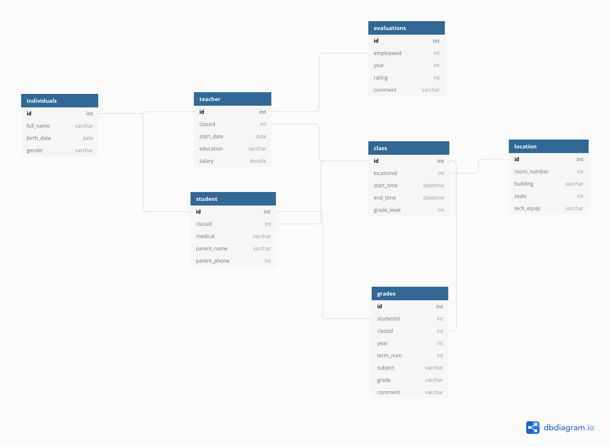
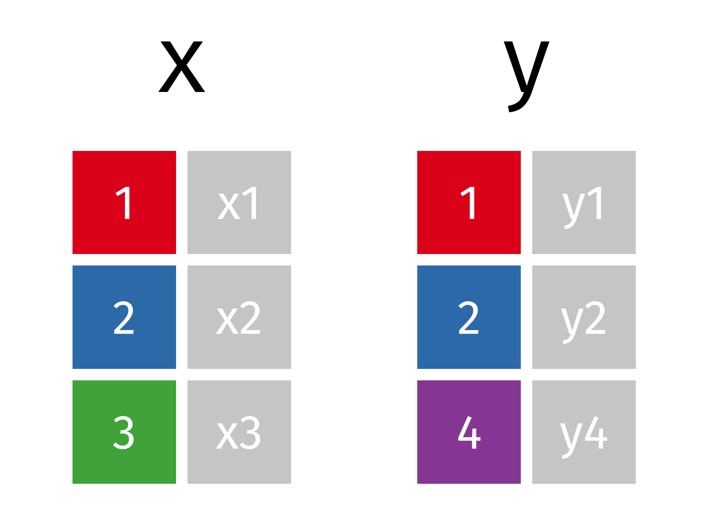
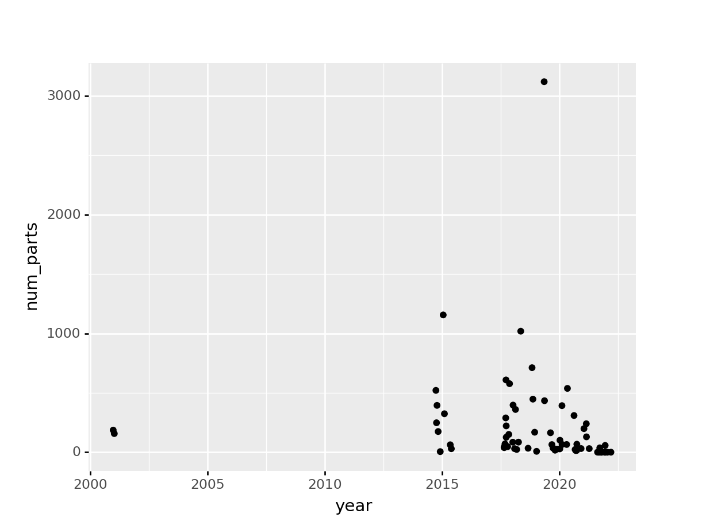
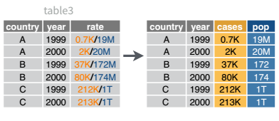

In this chapter, we’ll talk a bit about different operations you may need to do in order to clean your data up and get it into the form you want.
8.1 Merging Tables
Sometimes, we have two tables that we want to join together by a certain variable.
We know how to work on one table at a time, creating new variables, editing old variables, and even reformatting the table using wide and long format, but data doesn’t always come organized in one table at a time. Instead, some data may be organized relationally - that is, certain aspects of the data apply to a group of data points, and certain aspects apply to individual data points, and there are relationships between individuals that have to be documented.
Example: Primary School Organization
Each individual has certain characteristics:
full_name
gender
birth date
ID number
Each student has specific characteristics:
ID number
parent name
parent phone number
medical information
Class ID
Teachers may also have additional information:
ID number
Class ID
employment start date
education level
compensation level
There are also fields like grades, which occur for each student in each class, but multiple times a year.
ID number
Student ID
Class ID
year
term number
subject
grade
comment
And for teachers, there are employment records on a yearly basis
ID number
Employee ID
year
rating
comment
But each class also has characteristics that describe the whole class as a unit:
location ID
class ID
meeting time
grade level
Each location might also have some logistical information attached:
location ID
room number
building
number of seats
AV equipment

We could go on, but you can see that this data is hierarchical, but also relational:
each class has both a teacher and a set of students
each class is held in a specific location that has certain equipment
It would be silly to store this information in a single table (though it probably can be done) because all of the teacher information would be duplicated for each student in each class; all of the student’s individual info would be duplicated for each grade. There would be a lot of wasted storage space and the tables would be much more confusing as well.
But, relational data also means we have to put in some work when we have a question that requires information from multiple tables. Suppose we want a list of all of the birthdays in a certain class. We would need to take the following steps:
get the Class ID
get any teachers that are assigned that Class ID - specifically, get their ID number
get any students that are assigned that Class ID - specifically, get their ID number
append the results from teachers and students so that there is a list of all individuals in the class
look through the “individual data” table to find any individuals with matching ID numbers, and keep those individuals’ birth days.
Table joins allow us to combine information stored in different tables, keeping certain information (the stuff we need) while discarding extraneous information.
There are 3 main types of table joins:
Filtering joins, which remove rows from a table based on whether or not there is a matching row in another table (but the columns in the original table don’t change)
Ex: finding all teachers or students who have class ClassID
Set operations, which treat observations as set elements (e.g. union, intersection, etc.)
Ex: taking the union of all student and teacher IDs to get a list of individual IDs
Mutating joins, which add columns from one table to matching rows in another table
Ex: adding birthday to the table of all individuals in a class
keys are values that are found in multiple tables that can be used to connect the tables. A key (or set of keys) uniquely identify an observation. A primary key identifies an observation in its own table. A foreign key identifies an observation in another table.
We’re primarily going to focus on mutating joins, as filtering joins can be accomplished by … filtering … rather than by table joins. Feel free to read through the other types of joins here
Animating different types of joins
Note: all of these animations are stolen from https://github.com/gadenbuie/tidyexplain.
If we start with two tables, x and y,

library(dplyr) # Must load this library to do these joins
Attaching package: 'dplyr'
The following objects are masked from 'package:stats':
filter, lag
The following objects are masked from 'package:base':
intersect, setdiff, setequal, union
c1 cx cy
0 1.0 x1 y1
1 2.0 x2 y2
2 3.0 x3 NaN
3 4.0 NaN y4
You can find other animations corresponding to filtering joins and set operations here
Try it out
Rebrickable.com maintains a database of Lego sets, parts, and other data, available for download. You can download the data yourself, or you can use the tables I’ve downloaded and included: sets and themes
import pandas as pdsets = pd.read_csv("https://raw.githubusercontent.com/srvanderplas/Stat151/main/data/sets.csv")themes = pd.read_csv("https://raw.githubusercontent.com/srvanderplas/Stat151/main/data/themes.csv")
Let’s start out by joining the two datasets together. Note that we’ll need to specify which columns to join by in both R and pandas. In R, we’ll need to use by = c(left_col = right_col) to specify the column names in the left and right data frames. In pandas, we’ll need to use arguments left_on = 'left_col' and right_on = 'right_col'.
First, let’s try a full/outer join.
R solution
lego_fulljoin <-full_join(sets, themes, by =c("theme_id"="id"))head(lego_fulljoin)
set_num name.x year theme_id num_parts name.y
1 001-1 Gears 1965 1 43 Technic
2 0011-2 Town Mini-Figures 1979 67 12 Classic Town
3 0011-3 Castle 2 for 1 Bonus Offer 1987 199 0 Lion Knights
4 0012-1 Space Mini-Figures 1979 143 12 Supplemental
5 0013-1 Space Mini-Figures 1979 143 12 Supplemental
6 0014-1 Space Mini-Figures 1979 143 12 Supplemental
parent_id
1 NA
2 50
3 186
4 126
5 126
6 126
Python solution
lego_fulljoin = pd.merge(sets, themes, left_on ="theme_id", right_on ="id", how ="outer")lego_fulljoin.head()
set_num name_x year ... id name_y parent_id
0 001-1 Gears 1965.0 ... 1 Technic NaN
1 002-1 4.5V Samsonite Gears Motor Set 1965.0 ... 1 Technic NaN
2 1030-1 TECHNIC I: Simple Machines Set 1985.0 ... 1 Technic NaN
3 1038-1 ERBIE the Robo-Car 1985.0 ... 1 Technic NaN
4 1039-1 Manual Control Set 1 1986.0 ... 1 Technic NaN
[5 rows x 8 columns]
Sometimes, it’s easier to rename the columns before merging. Try that approach - if you have the same name for the columns that you intend to join on (and no other common names) then it’s easier to do the join and to understand what is happening. Try it out with the lego sets to see which approach you prefer.
set_num set_name ... theme_name theme_parent_id
0 001-1 Gears ... Technic NaN
1 002-1 4.5V Samsonite Gears Motor Set ... Technic NaN
2 1030-1 TECHNIC I: Simple Machines Set ... Technic NaN
3 1038-1 ERBIE the Robo-Car ... Technic NaN
4 1039-1 Manual Control Set 1 ... Technic NaN
[5 rows x 7 columns]
Which type of join? In some cases, we might prefer to use a different type of join. If our goal is to add the context of theme information to the set data, we might not care about themes that don’t have corresponding sets in our data. Can you determine what type of join is appropriate here?
R solution
lego_data <-left_join(sets_rn, themes_rn)
Joining, by = "theme_id"
head(lego_data)
set_num set_name year theme_id num_parts theme_name
1 001-1 Gears 1965 1 43 Technic
2 0011-2 Town Mini-Figures 1979 67 12 Classic Town
3 0011-3 Castle 2 for 1 Bonus Offer 1987 199 0 Lion Knights
4 0012-1 Space Mini-Figures 1979 143 12 Supplemental
5 0013-1 Space Mini-Figures 1979 143 12 Supplemental
6 0014-1 Space Mini-Figures 1979 143 12 Supplemental
theme_parent_id
1 NA
2 50
3 186
4 126
5 126
6 126
Python solution
lego_data = pd.merge(sets_rn, themes_rn, how ="left")lego_data.head()
set_num set_name ... theme_name theme_parent_id
0 001-1 Gears ... Technic NaN
1 0011-2 Town Mini-Figures ... Classic Town 50.0
2 0011-3 Castle 2 for 1 Bonus Offer ... Lion Knights 186.0
3 0012-1 Space Mini-Figures ... Supplemental 126.0
4 0013-1 Space Mini-Figures ... Supplemental 126.0
[5 rows x 7 columns]
Using Your Data Pick a theme you’re interested in, and plot the number of pieces in the sets of that theme over time.
R solution
I want to look at Pirates sets. We can see that there are 3 generations of main “Pirates” theme sets, but there is a parent theme that contains all of them. So let’s filter the full dataset on that parent id.
id name parent_id
1 147 Pirates NA
2 148 Pirates I 147
3 153 Pirates II 147
4 154 Pirates III 147
5 215 Pirates 207
6 263 Pirates of the Caribbean NA
7 638 Jake and the Never Land Pirates 504
8 651 Pirates 504
lego_data %>%filter(theme_parent_id ==147) %>%ggplot(aes(x = year, y = num_parts)) +geom_jitter()
Python solution
In this case, let’s look at any sets that have a theme name containing “Jurassic” (Park, World, etc.)
from plotnine import*dinos = lego_data.loc[lego_data["theme_name"].str.contains("Jurassic")]ggplot(dinos, aes(x ="year", y ="num_parts")) + geom_jitter()
<ggplot: (8774280686144)>

8.2 Data Summaries
We’ve talked before about using for loops to create summaries of your data, as in this example.
In may cases, however, it is easier to use a slightly different mechanism to work with groups of data. What do I mean by groups of data? When we used loops, the variable we “group by” is the variable controlling the loop.
Summarizing data with Lego
A lego “data frame” with two columns: green 1x2s and purple/pink 1x4s.
We can “group” the data frame by the different shades of 1x2 lego pieces
We can then compute a summary variable for the group, picking out e.g. the most “intense” shade in the purple/pink column.
Looking only at the summary, we could then ungroup our data and return to a regular data frame… only this time, we have a summary, with one row for each different value of the green column
In R/tidyverse syntax, we would use the group_by function to group a dataframe by a variable, and then we would use mutate or summarize to create our new column(s). mutate would be used if we want to have the same number of rows in our output as we had in the input, while summarize would create one row per group.
In python syntax, we use groupby to group the DataFrame by a variable, and then we use .agg to aggregate. The function pd.NamedAgg(column, function) allows us to explicitly state that we want to use function function on column column, and assign that result to a new variable.
Suppose we want to summarize the lego set data by year, computing the number of sets and the mean number of pieces per set. We’ll take the data set we generate and plot the number of pieces, with point size scaled to show the number of sets released that year.
Nearly always, when multiple variables are stored in a single column, they are stored as character variables. There are many different “levels” of working with strings in programming, from simple find-and-replaced of fixed (constant) strings to regular expressions, which are extremely powerful (and extremely complicated).
Some people, when confronted with a problem, think “I know, I’ll use regular expressions.” Now they have two problems. - Jamie Zawinski
Alternately, the xkcd version of the above quote
8.3.1 Basic String Operations
The tidyverse package to deal with strings is stringr. The functions in stringr take the form of str_XXX where XXX is a verb. So str_split(), str_replace(), str_remove(), str_to_lower() all should make some sense.
The corresponding python library is re, short for regular expression. Pandas also includes some functionality from this package in (partially) vectorized form.
For this example, we’ll use a subset of the US Department of Education College Scorecard data. Documentation, Data. I’ve selected a few columns from the institution-level data available on the College Scorecard site.
Let’s take a look (Read in the data)
library(readr)college <-read_csv("https://raw.githubusercontent.com/srvanderplas/Stat151/main/data/College_Data_Abbrev.csv", guess_max =5000, na ='.')
`curl` package not installed, falling back to using `url()`
Rows: 6806 Columns: 17
── Column specification ────────────────────────────────────────────────────────
Delimiter: ","
chr (14): INSTNM, CITY, STABBR, ZIP, ACCREDAGENCY, INSTURL, PREDDEG, MAIN, H...
dbl (3): UNITID, NUMBRANCH, ST_FIPS
ℹ Use `spec()` to retrieve the full column specification for this data.
ℹ Specify the column types or set `show_col_types = FALSE` to quiet this message.
str(college)
spec_tbl_df [6,806 × 17] (S3: spec_tbl_df/tbl_df/tbl/data.frame)
$ UNITID : num [1:6806] 100654 100663 100690 100706 100724 ...
$ INSTNM : chr [1:6806] "Alabama A & M University" "University of Alabama at Birmingham" "Amridge University" "University of Alabama in Huntsville" ...
$ CITY : chr [1:6806] "Normal" "Birmingham" "Montgomery" "Huntsville" ...
$ STABBR : chr [1:6806] "AL" "AL" "AL" "AL" ...
$ ZIP : chr [1:6806] "35762" "35294-0110" "36117-3553" "35899" ...
$ ACCREDAGENCY: chr [1:6806] "Southern Association of Colleges and Schools Commission on Colleges" "Southern Association of Colleges and Schools Commission on Colleges" "Southern Association of Colleges and Schools Commission on Colleges" "Southern Association of Colleges and Schools Commission on Colleges" ...
$ INSTURL : chr [1:6806] "www.aamu.edu/" "https://www.uab.edu" "www.amridgeuniversity.edu" "www.uah.edu" ...
$ PREDDEG : chr [1:6806] "Predominantly bachelor's-degree granting" "Predominantly bachelor's-degree granting" "Predominantly bachelor's-degree granting" "Predominantly bachelor's-degree granting" ...
$ MAIN : chr [1:6806] "main campus" "main campus" "main campus" "main campus" ...
$ NUMBRANCH : num [1:6806] 1 1 1 1 1 1 1 1 1 1 ...
$ HIGHDEG : chr [1:6806] "Graduate" "Graduate" "Graduate" "Graduate" ...
$ CONTROL : chr [1:6806] "Public" "Public" "Private Non Profit" "Public" ...
$ ST_FIPS : num [1:6806] 1 1 1 1 1 1 1 1 1 1 ...
$ LOCALE : chr [1:6806] "12" "12" "12" "12" ...
$ LATITUDE : chr [1:6806] "34.783368" "33.505697" "32.362609" "34.724557" ...
$ LONGITUDE : chr [1:6806] "-86.568502" "-86.799345" "-86.17401" "-86.640449" ...
$ State : chr [1:6806] "Alabama" "Alabama" "Alabama" "Alabama" ...
- attr(*, "spec")=
.. cols(
.. UNITID = col_double(),
.. INSTNM = col_character(),
.. CITY = col_character(),
.. STABBR = col_character(),
.. ZIP = col_character(),
.. ACCREDAGENCY = col_character(),
.. INSTURL = col_character(),
.. PREDDEG = col_character(),
.. MAIN = col_character(),
.. NUMBRANCH = col_double(),
.. HIGHDEG = col_character(),
.. CONTROL = col_character(),
.. ST_FIPS = col_double(),
.. LOCALE = col_character(),
.. LATITUDE = col_character(),
.. LONGITUDE = col_character(),
.. State = col_character()
.. )
- attr(*, "problems")=<externalptr>
import pandas as pdcollege = pd.read_csv("https://raw.githubusercontent.com/srvanderplas/Stat151/main/data/College_Data_Abbrev.csv", na_values ='.')
What proportion of the schools operating in each state have the state’s name in the school name?
We’ll use str_detect() to look for the state name in the college name.
library(stringr) # string processing# Outside the pipestr_detect(college$INSTNM, pattern = college$State)[1:10]
# Using the pipe and mutate:college <- college %>%mutate(uses_st_name =str_detect(INSTNM, State))library(ggplot2) # graphs and charts# By state - percentage of institution namescollege %>%group_by(State) %>%summarize(pct_uses_st_name =mean(uses_st_name), n =n()) %>%filter(n >5) %>%# only states/territories with at least 5 schools# Reorder state factor level by percentage that uses state namemutate(State =reorder(State, -pct_uses_st_name)) %>%ggplot(data = ., aes(x = State, y = pct_uses_st_name)) +geom_col() +coord_flip() +geom_text(aes(y =1, label =paste("Total Schools:", n)), hjust =1)
This example turned out to be way more complicated in Python than I was anticipating, mostly because unlike R, python string operations aren’t vectorized over both the string and the pattern you’re searching for. So this example uses a few tricks (like apply + lambda functions) that we haven’t talked about yet.
import re # regular expressions# This doesn't work because str.contains doesn't take a vector of patterns# college["INSTNM"].str.contains(college["State"])[1:10]# This is a function that we create# We'll cover functions in the next chapter# but for now, I've used this so that the code is a little more readable...def str_detect(x, y):# Ensure x and y aren't null/NaN null_vals = pd.isna(x) or pd.isna(y)# If they aren't null, then search x for pattern y and return the resultifnot null_vals:returnbool(re.search(y, x))# If there are null/na values, return Falseelse:returnFalse# We then create a new variable by using our function on each row individuallycollege = college.assign(uses_st_name = college.apply(lambda row: str_detect(row.INSTNM, row.State), axis =1))# Then we aggregatecollege_names = college.groupby("State", as_index =False).agg( pct_uses_st_name = pd.NamedAgg('uses_st_name', 'mean'), n = pd.NamedAgg('uses_st_name', 'count'))# Sorting by percent using state namecollege_names = college_names.loc[college_names.n >5].\ sort_values('pct_uses_st_name', axis =0)# Creating a label variablecollege_names['label'] ="Total Schools: "+ college_names['n'].astype(str)# Sorting states and enforcing that order - like making a factor in Rstate_list = college_names.State.unique().tolist()college_names.State = pd.Categorical(college_names.State, categories = state_list)from plotnine import*# graphs and charts# By state - percentage of institution namesggplot(data = college_names) +\geom_text(aes(x ="State", y =1, label ='label'), ha='right') +\geom_col(aes(x ="State", y ="pct_uses_st_name")) + coord_flip()
<ggplot: (8774269801725)>
I’m not going to get into regular expressions in this class, but if you do want more power to understand how to work with strings, that’s an excellent skill to pick up.
8.3.2 Joining and Splitting Variables
There’s another string-related task that is fairly commonly encountered: separating variables into two different columns (as in Table 3 in the previous chapter).

A visual representation of what separating variables means for data set operations.
Separating Variables in R
We can use str_extract() if we want, but it’s actually faster to use separate(), which is part of the tidyr package. There is also extract(), which is another tidyr function that uses regular expressions and capture groups to split variables up.
# A tibble: 6 × 5
country year rate cases population
<chr> <int> <chr> <chr> <chr>
1 Afghanistan 1999 745/19987071 745 19987071
2 Afghanistan 2000 2666/20595360 2666 20595360
3 Brazil 1999 37737/172006362 37737 172006362
4 Brazil 2000 80488/174504898 80488 174504898
5 China 1999 212258/1272915272 212258 1272915272
6 China 2000 213766/1280428583 213766 1280428583
I’ve left the rate column in the original data frame just to make it easy to compare and verify that yes, it worked.
separate() will also take a full on regular expression if you want to capture only parts of a string to put into new columns.
Separating Variables in python
In python, we can do a similar observation, but one convention of python that is very useful here is that we can do a multiple-assign on the left hand side.
country year rate cases population
0 Afghanistan 1999 745/19987071 745 19987071
1 Afghanistan 2000 2666/20595360 2666 20595360
2 Brazil 1999 37737/172006362 37737 172006362
3 Brazil 2000 80488/174504898 80488 174504898
4 China 1999 212258/1272915272 212258 1272915272
5 China 2000 213766/1280428583 213766 1280428583
We use col.str.split() to split the column, expand = True indicates that we want separate columns, and then by including two things on the left hand side, we can store each column into its own new value.
And, of course, there is a complementary operation, which is when it’s necessary to join two columns to get a useable data value.
A visual representation of what uniting variables means for data set operations.
Joining Variables in R
separate() has a complement, unite(), which is useful for handling situations like in table5:
# A tibble: 6 × 4
country year cases population
<chr> <chr> <chr> <chr>
1 Afghanistan 1999 745 19987071
2 Afghanistan 2000 2666 20595360
3 Brazil 1999 37737 172006362
4 Brazil 2000 80488 174504898
5 China 1999 212258 1272915272
6 China 2000 213766 1280428583
Note that separate and unite both work with character variables - it’s not necessarily true that you’ll always be working with character formats when you need to do these operations. For instance, it’s relatively common to need to separate dates into year, month, and day as separate columns (or to join them together).
Of course, it’s much easier just to do a similar two-step operation (we have to convert to numeric variables to do math)
country century year rate
0 Afghanistan 19 1999 745/19987071
1 Afghanistan 20 2000 2666/20595360
2 Brazil 19 1999 37737/172006362
3 Brazil 20 2000 80488/174504898
4 China 19 1999 212258/1272915272
5 China 20 2000 213766/1280428583
In python, we can join character values using +, so it’s an even simpler process. Of course, as in R, it may be better to do a two-step operation to convert to numeric variables. Unlike in R, you can do the string concatenation process first and then convert to numeric variables without having to think too much.
country year rate
0 Afghanistan 1999 745/19987071
1 Afghanistan 2000 2666/20595360
2 Brazil 1999 37737/172006362
3 Brazil 2000 80488/174504898
4 China 1999 212258/1272915272
5 China 2000 213766/1280428583


 ::: {.cell}
::: {.cell}